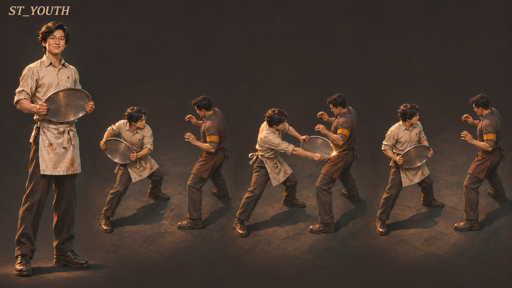
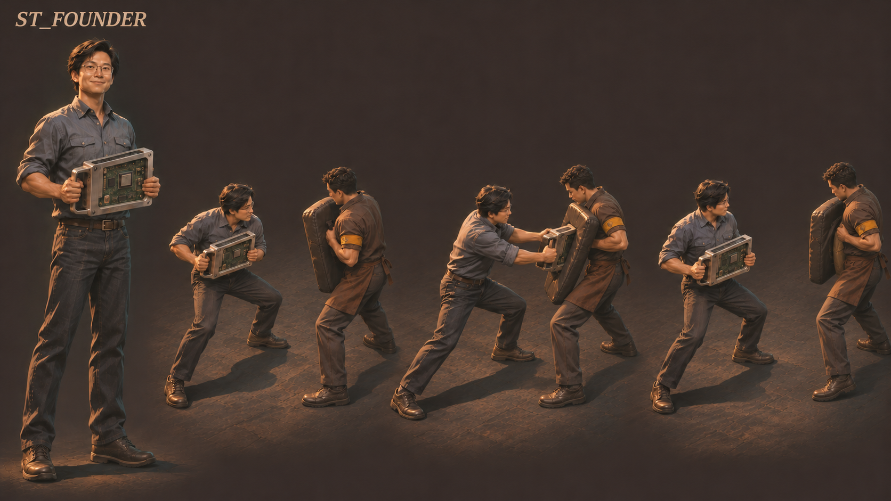
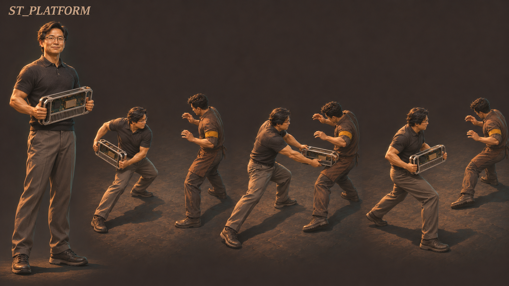
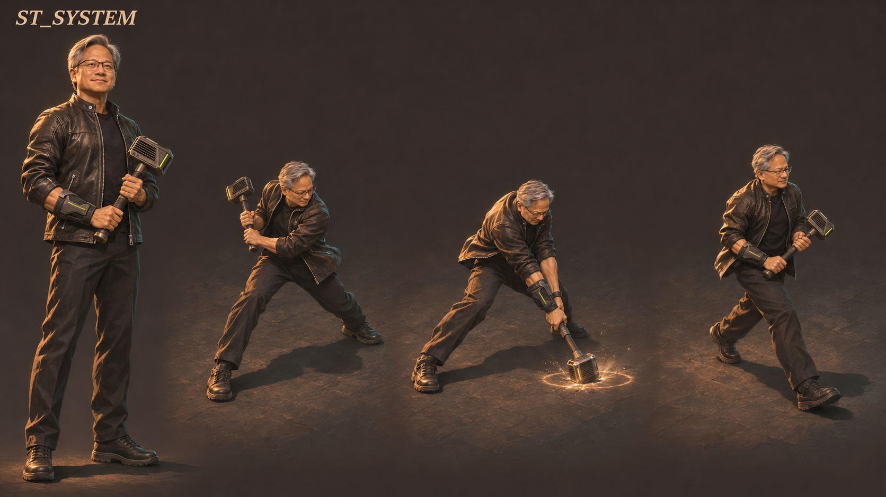

四个阶段，同一个人 左侧造型，右侧准备 / 接触或落地 / 收势
阶段首次：第 1 战 本图展示：第 1 战

盘缘接触与局部受力的概念表达；不能据此证明实际碰撞或敌人停招。 画面尚未标定为游戏镜头。打开原图看动作细节 ↗ 招牌动作 · 近身轻扫
用盘缘横扫，给下一步留路 鼠标左键按住连扫，每一击重新读取你的瞄准。松开停止后续出手，当前这一击完成。
这次成长 从第一战就有轻扫、重击与闪避；战胜表演队后才获得硬币。 什么时候会吃亏 轻扫不会让敌人停招或被击飞；挥空也要完成动作，别站在下一条冲线上。 造型来历、故事与幻想 年龄与衣着 少年外观约16–19；艺术年龄重建，不是已核历史肖像；浅色棉工作衫、普通围裙、直裤、实用鞋 手中的器具 手持金属圆托盘；同一握边始终可见 史实边界 Portland餐厅劳动与1993硅谷创业餐厅分开；不编顾客冲突 幻想动作 托盘实扫贴近目标；短推与让线均为幻想 阶段首次：第 2 战 本图展示：第 3 战

载框前压接触使盾略偏；开口与控制效果待动态验证。收势对手后脚边缘不完整，非动作资产。 画面尚未标定为游戏镜头。打开原图看动作细节 ↗ 招牌动作 · 踏步重击
短踏步重击，打开一个缺口 鼠标右键新按一下，先收身，再用载框踏步接触盾面；控制真正成功时才使盾兵让出局部缺口，随后贴近轻扫。
这次成长 第2战入场先换创业衣着，手里仍是托盘；战2胜后才获得载框与宽扫。此图展示第3战。 什么时候会吃亏 这时没有主动护面。重击错时或挥空仍可能挨打，不能把接近当成无敌冲锋。 造型来历、故事与幻想 年龄与衣着 创业者外观约30余岁；本图不是具体年份照片；蓝灰棉衬衫卷袖、牛仔裤、普通腰带与鞋 手中的器具 带背柄和支撑边的矩形原型载框，电路板凹置其中；非护甲 史实边界 三位创始人共同贡献；Sega、ST、TSMC不作战利品 幻想动作 双手载框短踏步推开一侧；图中不开主动护面 阶段首次：第 4 战 本图展示：第 4 战

行进姿态是视觉意图；速度、接触连续性与追位收益尚未经过实玩。 画面尚未标定为游戏镜头。打开原图看动作细节 ↗ 招牌动作 · 近身轻扫
边走边扫，截住正在回收的对手 WASD继续移动，左键轻扫随你的手动瞄准出手。战3胜后，扫击期间恢复全速移动，在第4战追位。
这次成长 同一尺寸的载框继续使用，成长来自移动和接触机会；不增加隐藏射程、自动炮台或回声分身。 什么时候会吃亏 行进中的挥空照样付出动作时间；对手返程路线仍危险，移动扫并不自动找安全出口。 造型来历、故事与幻想 年龄与衣着 平台期中年外观约40余岁，主要黑发与轻微年龄变化；炭灰针织Polo、舒适长裤、实用鞋；不用另一套盔甲 手中的器具 同尺寸载框的开放金属筋、凹置板面与通风细节；不增加隐藏范围 史实边界 CUDA2006、Toolkit1.0 2007分开；AlexNet归三位论文作者 幻想动作 移动中实扫、截住回收路线；不召回声或发射代码 阶段首次：第 5 战 本图展示：第 8 战

本图展示落地与低位波，未展示目标接触或受力；不能当作控制命中演示。 画面尚未标定为游戏镜头。打开原图看动作细节 ↗ 招牌动作 · 踏步重击
落下重击，再亲手离开危险 右键重击；命中实际扣血后，后期收势可全速主动移动，也可在合法时新按空格提前闪避。画面最后一步是步行，不是自动闪避。
这次成长 系统期从第5战开始，但这张图画的是第8战最终态。槌头与波对同一目标合计只扣一次血，波只伤害，实体槌头才按条件尝试控制。 什么时候会吃亏 护面只在短暂正面接触时减伤，不挡地热、范围爆炸或背后攻击；落空没有命中后的机动收益。 第5战 开始持槌第6战 重击带短护面第7战 命中后机动收势第8战 落地波；本图状态不是第5战就全解锁。每次成长在前一战胜利后获得；终章胜利只结算，不再发无处使用的新能力。
造型来历、故事与幻想 年龄与衣着 系统期成熟外观约50至60余岁；本张画最终灰发状态；真实黑皮夹克、普通深色内搭、直裤与橡胶底鞋 手中的器具 紧凑计算模块造型槌头、实际握柄、小型实体前臂护面；不加全身机械甲 史实边界 DGX-1 2016为继承已核背景；CES2025具体盾锤动作与时间码未知；成功召锤明确幻想 幻想动作 真实槌头重击可有限控制；波只伤害，命中后可以主动移动退出 四项操作，组合出进攻与退路 键鼠候选 · 第一战先有三项，硬币从第二战可用
WASD移动，鼠标手动瞄准；不自动追敌。用轻扫处理贴近目标，用重击争取局部空间，闪避同时承担进场与退出，硬币补远处威胁。
01 近身轻扫 鼠标左键 · 可按住
可按住用真实器具边缘连续扫击，每击重新采样瞄准；松开不补发，无真实硬控。
贴近目标持续扫击，随每一击重新调整朝向。
失误成本 挥空照付完整动作与CD；没有额外追击或自动转向
02 踏步重击 鼠标右键 · 新按一下
踏步重击；后期护面覆盖踏步，命中后机动收势，终章落地波只伤害、实体槌头才尝试控制。
读到敌人还未释放的动作后踏步接触；能否打断取决于目标和控制保护。
失误成本 错时、落空、保护姿态或护面方向错误均可能挨打；取消不退款
03 独立闪避 空格 · 新按一下
进入和退出共用冷却，保留身体碰撞，只有部分时段无敌。
沿按下时的移动方向闪避；没有移动输入时，向手动瞄准反方向退。
失误成本 可能撞停、落入旧危险或过早用完；不是安全传送
04 单发硬币 E · 新按一下
远处补充手段，单枚直线、不回返、不穿透或复制。
第1战胜后获得。从前排空隙单发射向暂时够不到的目标。
失误成本 会被前排挡住，空投与取消均付完整CD
只按住轻扫会连续出手。任何新的重击、闪避或硬币请求，即使因冷却等原因失败，也会停止连扫；要继续须重新按下。这个取舍尚待真人操作验证。
输入、取消与首测时序 同一时刻的新请求优先顺序：闪避 → 重击 → 硬币 → 轻扫；只检查明确的新按下，不拿一直按住的轻扫补发。忙锁期间的失败请求不排队。 轻扫松开只停止未来连扫，当前一击继续。闪避取消攻击仍保留原攻击锁和冷却，不退款，也不自动续扫。暂停与恢复会清掉连扫意图，原先按住的键需要先松开。 轻扫：前摇0.12秒、生效0.14秒、收势0.22秒，攻击锁与冷却0.48秒。 重击：前摇0.36秒、生效0.12秒、收势0.42秒，攻击锁0.90秒、冷却2.40秒；0.24–0.36秒踏步。前摇可闪避取消，未命中时需到0.60秒才恢复后续取消资格。 闪避：位移0.18秒＋收势0.12秒，冷却1.20秒；仅0.04–0.16秒无敌，仍受墙和身体阻挡，不会自动选择安全落点。 硬币：0.16秒发出，再收势0.14秒，冷却1.60秒；发出前取消则无弹，发出后独立结束。 以上数值均为首测假设，未绑定游戏尺度或验证平衡。P保留手动暂停；既有Q治疗的实际接入状态仍待确认，不计作新增主动作。 护面、命中后的机动与终章控制 第6战开始，重击护面在0.06秒起、0.36秒前生效，覆盖踏步；仅正面真实护面相交的规定近战、实体弹体和可挡直线攻击减伤80%。地热、范围爆炸和背后不在范围内。 第7战开始，当前重击真实造成正生命扣减后，0.48–0.90秒收势可全速主动移动，落空仍半速；更早闪避也必须新按下且合法。不自动移动，不免除原攻击锁和冷却。 第8战槌头与落地波对同一目标共一次伤害，都可绕过方向盾，但不绕过其他防御；先按实际接触先后计算，同刻槌头优先。波被墙遮挡，已经释放的波不会随主角取消而消失。 波只造成伤害，不推移或打断。只有实体槌头接触才检查一次控制，而且同一次重击必须已对这个仍存活的目标实际扣血；不能借目标A的伤害去控制未受伤的目标B。检查失败也不在同击重试。 波先对同一目标扣血、槌头后接触时，槌头可检查控制但不再扣血。玩家的机动收势收益看当前重击是否打中过任一目标，与逐目标控制资格分开。 控制保护从一次真实控制成功开始，直到目标受控后新启动的一次正常攻击完成生效与收势。保护期间仍可受伤，但不能反复控制，也不会因被拒控制刷新保护；已经释放的危险继续存在。 逐目标控制资格已完成文字澄清并作为候选采纳；尚未通过运行测试。
比旧技能提案改变了什么 不再使用Focus、准备回声、齐射和回返计伤。 轻扫按住连续，无短缓存；Step→Break→Coin→Sweep，从同刻明确新请求中选择合法项。 第五战持槌，第六战护面，第七战命中后机动收势，第八战落地波。 删除史实技术直接导致攻击能力的硬因果，承认器具和战斗成长为幻想。 重量感先用身体发力、实物接触、材质声音、敌方实际受力与清群后的空间变化来验证。首测从0顿帧、低震或关闭震动开始；这不是永久审美结论，也不能用闪光掩盖危险预警。
每一次成长，在下一战兑现 八战对手方向保留；进退通路和节奏仍待测试
01 餐厅里的冲撞表演 冲撞领班与表演队 展开用途
怎样靠近 走侧面让过冲撞 怎样出手 近身轻扫或踏步重击 怎样退出 独立闪避退出下一条冲线 另一条路 继续普通移动，等更明显的收势 胜利后的成长 获得单发硬币 下一战怎样用 战2用单发硬币拆远处枪手；不是主要清群手段 敌人还需要怎样适配 普通贴身不自动伤害；冲撞以锁向动作实际接触 查看原八战对手设计 → 02 挑战街机冠军 3dfx／Voodoo幻想阵营的街机冠军 展开用途
怎样靠近 横穿一条已锁定长线进入稳定侧面 怎样出手 短距离近战处理枪手或机座 怎样退出 留住闪避横离新射线 另一条路 单发硬币先拆远处枪手 胜利后的成长 换原型载框，轻扫更宽、更远 下一战怎样用 战3侧面扫到盾兵与后排，不靠回返弹绕背 敌人还需要怎样适配 一个侧面必须容许接近与一次攻击；不把静止Boss改冲撞 查看原八战对手设计 → 03 拆开双盾阵 ATI／Radeon幻想阵营的双盾队长 展开用途
怎样靠近 靠近盾阵外侧 怎样出手 踏步重击开局部护面后近身轻扫扫身后 怎样退出 沿真实净宽离开，不穿人 另一条路 正面减伤磨血或普通移动绕侧 胜利后的成长 轻扫期间恢复全速移动 下一战怎样用 战4追位时持续近身扫击 敌人还需要怎样适配 盾不追武器转向；控制后1.1秒不补位关口 查看原八战对手设计 → 04 追上回旋冠军 回旋女冠军与巡回竞技队 展开用途
怎样靠近 步行或闪避截回收位置 怎样出手 升级后的移动近身轻扫追位 怎样退出 从固定返程轨迹内侧走出 另一条路 单发硬币截击，晚一点再进场 胜利后的成长 换手持系统槌，重击踏步更远 下一战怎样用 战5绕拳后用可见槌头近身重击 敌人还需要怎样适配 回收路线必须在现速度可截及范围；不等她罚站 查看原八战对手设计 → 05 从重拳旁边穿过去 Intel／Xeon Phi幻想阵营的机甲领队 展开用途
怎样靠近 锁拳后步行绕到侧面，尽量留闪避 怎样出手 手持槌踏步重击或移动近身轻扫 怎样退出 看到转腰后独立闪避换侧 另一条路 单发硬币或近身先清弧投手 胜利后的成长 重击获得短暂正面护面 下一战怎样用 战6在短护面时窗承接一拍正面火线 敌人还需要怎样适配 拳挥动时已有可达输出侧面；主身全程可伤 查看原八战对手设计 → 06 与苏姿丰交锋 苏姿丰的AMD幻想战队 展开用途
怎样靠近 进入刚射完一列的内侧空隙 怎样出手 带护面的踏步重击接一拍后近战 怎样退出 沿敌人侧面换列，避免退回旧交叉口 另一条路 单发硬币清一侧并正常躲避 胜利后的成长 正HP命中后机动收势，并可更早手动闪避 下一战怎样用 战7命中后可在收势主动全速移动，早Step仍为附加收益，落空无此资格 敌人还需要怎样适配 与战2静态横穿不同，保留交替列间的推进和撤离空档 查看原八战对手设计 → 07 余烬之下 余烬兽 展开用途
怎样靠近 绕热区接近 怎样出手 护面挡正面飞针后踏步重击 怎样退出 命中后收势可主动全速移动，或新按Step提前退出；落空按旧取消门 另一条路 普通移动和单发硬币等下次窗口 胜利后的成长 重击获得落地波 下一战怎样用 战8槌头与波各真实目标只一次伤害；波本身不推开人，空间变化须靠实体控制或清除 敌人还需要怎样适配 地热与可挡飞针形状分开；不强制格挡 查看原八战对手设计 → 08 十席的最后邀请 十位真实人物的游戏化身 展开用途
怎样靠近 从可读开放弧线步行进入近战目标侧面 怎样出手 轻扫或终章重击；波只伤害，实体槌头才能按条件控制 怎样退出 沿仍开放的侧口移动或闪避 另一条路 单发硬币先处理暂时不可近的目标 胜利后的成长 仅结算与谢幕，不再新增能力 下一战怎样用 终章内用完已有成长；胜利后结算。 敌人还需要怎样适配 十人全在场；按完整未结束招式限制并发并计入残留危险 查看原八战对手设计 → 终章仍是十个人，不是三类代表 十位既定身份的幻想化身开场同时在场，各自独立承伤；三名近战、四名远射、三名施法，不重排既有角色。候选方案最多同时存在两条尚未完整结束的攻击序列，其中近战最多一条，已经释放的危险也占序列名额。公平轮转、通路和认知负担尚待实玩。
Tench Coxe、John O. Dabiri、Dawn Hudson、Harvey C. Jones、Melissa B. Lora、Stephen C. Neal、A. Brooke Seawell、Aarti Shah、Mark A. Stevens、Suzanne Nora Johnson
十席真实击败并完成退场，已释放危险结束，主角仍存活，由宿主确认
这是游戏创作名单，不是对当前现实董事职务或人物参与、背书的声明。
旧八战页保留此前技能提案。本页是新的近战候选方案；旧页和旧试玩没有因此更新为这些规则。
看起来有力，玩起来也成立吗？ 独立文字复核有条件支持这版候选展示。以下五项意见与回应全部保留；文字上的闭合，不代表运行、平衡或爽感已经通过。
F1 · P1 失败请求会中止连扫 独立意见与所需证据 Hold中插入合法/冷却Coin与合法/非法Step，记录停攻与重新按；若普遍误解则重审。
设计回应 保留为明确候选取舍，不偷加自动续扫；不能宣称输入负担已经解决。
体验待验证
F2 · P1 构造例不能证明升级救险 独立意见与所需证据 同几何、危险和输入对照升级前后步行/Step收益；战3/5早期入口另测。
设计回应 接受；未升级.60 Step也可能.78完成位移，早于.82地热。
成长收益待验证
F3 · P2 正HP控制资格的目标范围 独立意见与所需证据 局部独立文本复验通过；实现再验A正/B零、同目标波先头后、死亡/保护/不同root。
设计回应 明确同一次攻击＋同一承伤目标；A伤不能赋予B零伤控制；玩家动作机动收益仍按当前Break整体命中。
局部文本已澄清，未运行
F4 · P1 重量与群战释放尚无证据 独立意见与所需证据 正常速度与实际音频比较轻扫活怪、扫死群、重击控制/仅伤害，再比较站撸/充分退射/主动近战。
设计回应 采纳；发力→接触→材质声/受力→净空是可信假说，0顿帧非永久审美结论。
爽感与策略收益待验证
F5 · P2 战术差异强于中段历史特色 独立意见与所需证据 遮标签审姿态/行动目的；并列首次战次和画面战次，明确系统逐战解锁及团队贡献。
设计回应 采纳；四阶段不替代历史代表性审美判断，删硬因果但不假装全部达标。
候选交用户审阅
F3已明确限定同一次攻击与同一承伤目标。局部文字复验只确认这条限定一致，仍需测试A正伤／B零伤、先波后槌、死亡、保护及不同攻击之间的隔离。
仍未被证据证明的部分 失败请求停攻的理解与操作负担 正确近战入口和机动收势的实际收益 0顿帧下重量与扫群释放感 退射/站撸对照、终章公平轮转 历史独特性、图片镜头/手脚/接触和实机效果 还需绑定游戏输入、身体尺度、移速与唯一伤害层，并检查接触时刻和墙遮挡。短暂受伤保护、十席轮转、自然10–15分钟流程、音频、真机与长时间性能仍未验证。四张新图现在可查看，但没有新动画、游戏内效果或正常速度的打击证据。
真实故事提供背景，战斗属于幻想 四阶段衣着、年龄、战斗器具为艺术重建。史实仅说明人物、团队、时代；现代科技不直接生成武术。具体CES动作未核。
共同创业保留 Jensen Huang、Chris Malachowsky、Curtis Priem 的归属；Sega、ST、TSMC 是伙伴，不能变成战利品。AlexNet 的论文作者是 Alex Krizhevsky、Ilya Sutskever、Geoffrey Hinton，不写成主角个人发明。
查看史料支持范围与仍未核实的部分
NVIDIA餐厅回顾 早年波特兰Denny’s工作与1993硅谷创业讨论地点不同。
不证明真实顾客冲突、战斗、硬币奖励或器具招式。
NVIDIA官方公司时间线 1993年三位共同创始人；2006年CUDA架构；2012年AlexNet相关平台背景。
公司平台支持不等于研究所有权；不证明工程板、速度升级或锤的真实来历。
TSMC与NVIDIA合作公告 双方自1998年开始高量生产合作。
不抹去ST此前贡献，也不证明TSMC让主角移动更快；后者是设计隐喻。
CUDA Toolkit官方档案 Toolkit 1.0档案标注2007年6月；与2006架构区分。
档案不证明黄仁勋个人独创或任何武器动作。
AlexNet 2012论文 作者Alex Krizhevsky、Ilya Sutskever、Geoffrey Hinton。
署名与GPU实现背景不等于主角个人发明，更不证明锤招。
DGX-1 2016公告 2016-04-05公布集成硬件、软件与工具的DGX-1系统。
护面整合进重击为幻想转译，不采性能宣传作胜负。
CES 2025 NVIDIA官方活动页 2025-01-06 keynote活动日期可证。
具体盾/锤姿态、是否召出或挥动及时间码仍未核。成功落锤与冲击明确幻想。
来源链接沿用已冻结的核对记录；本页未重新联网核验。年龄、衣着、道具、招式和比赛都是艺术重建或游戏创作，不代表真实冲突、参与或肖像批准。